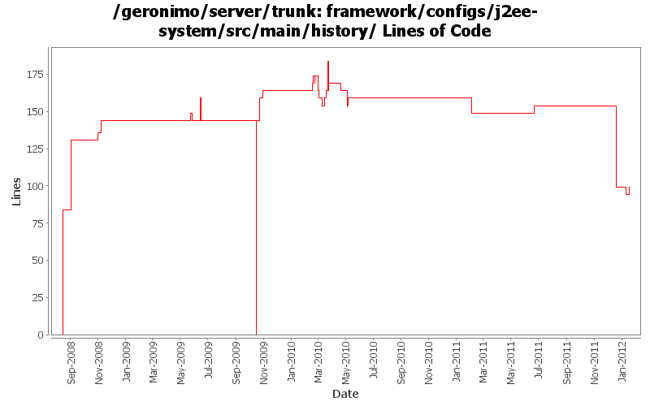

[root]/framework/configs/j2ee-system/src/main/history

| Author | Changes | Lines of Code | Lines per Change |
|---|---|---|---|
| Totals | 42 (100.0%) | 590 (100.0%) | 14.0 |
| djencks | 16 (38.1%) | 408 (69.2%) | 25.5 |
| rickmcguire | 5 (11.9%) | 61 (10.3%) | 12.2 |
| gawor | 15 (35.7%) | 55 (9.3%) | 3.6 |
| gdamour | 1 (2.4%) | 48 (8.1%) | 48.0 |
| xuhaihong | 2 (4.8%) | 10 (1.7%) | 5.0 |
| rwonly | 1 (2.4%) | 6 (1.0%) | 6.0 |
| dwoods | 2 (4.8%) | 2 (0.3%) | 1.0 |
fix up build for karaf changes and modules that aren't built currently
5 lines of code changed in 1 file:
use same asm as karaf
0 lines of code changed in 1 file:
GERONIMO-6240 Modify configs so that they use features as the bootstrap, and fix a few compile and test errors. Servers build but do not fully start
1 lines of code changed in 1 file:
GERONIMO-6240 Make several base geronimo functions (kernel, deployer, etc) DS services and make the car-maven-plugin take advantage of that. Server assembly doesn't work yet, builds framework.
1 lines of code changed in 1 file:
Update dependencies.xml file, including bval and commons-jexl changes
5 lines of code changed in 1 file:
GERONIMO-5764 Support Bundles Deployment
6 lines of code changed in 1 file:
remove some unused dependencies
0 lines of code changed in 1 file:
GERONIMO-5702: Update for Karaf 2.1.2. Based on patch from Viola Lu
5 lines of code changed in 1 file:
The java ee concurrent JSR appears dead, and this code has some serious problems
within an OSGi environment. Removing this from the base Geronimo server because
of these issues. If the concurrent support ever becomes real, hopefully the split
package problems will be fixed in the final spec.
5 lines of code changed in 1 file:
remove gbean groovy transformer from build as it is disabled at runtime. it reduces the size of framework assembly by >2MB
0 lines of code changed in 1 file:
GERONIMO-4680 get class transformers working somewhat in karaf. Make karaf script start geronimo
0 lines of code changed in 1 file:
Switch to latest stax spec level
1 lines of code changed in 1 file:
Fix stax/jaxb problems when starting the framework assembly.
10 lines of code changed in 1 file:
dependencies updates
0 lines of code changed in 1 file:
GERONIMO-5201 Repace service versions of spec bundles with Geronimo latest versions.
40 lines of code changed in 1 file:
dependencies updates
5 lines of code changed in 1 file:
GERONIMO-4971: Initial OBR integration for Aries Applications. Some of the OBR resolver code is based on the resolver in Apache Aries
5 lines of code changed in 1 file:
don't include junit in our server
0 lines of code changed in 1 file:
GERONIMO-5165: Litte extender that scans for META-INF/services/java.sql.Driver resources and installs the drivers
0 lines of code changed in 1 file:
switch to asm 3.2 - framework builds and starts now
5 lines of code changed in 1 file:
use felix obr api instead of osgi api
0 lines of code changed in 1 file:
update dependencies for obr addition
5 lines of code changed in 1 file:
GERONIMO-4931 prepare for amq under blueprint by moving to latest karaf using aries blueprint
0 lines of code changed in 1 file:
updates to get trunk building again
5 lines of code changed in 1 file:
GERONIMO-4971 include obr repository.xml in every plugin, and install it into an obr instance when the plugin is installed. Also update the aries plugin and build it. The framework geronimo-obr module is written by Jarek Gawor with minor changes
5 lines of code changed in 1 file:
some more logging updates: 1) use geronimo log4j.properties files to configure logging, 2) expose service to configure logging programtically, 3) remove unused geronimo-logging module
5 lines of code changed in 1 file:
don't need commons-cli bundle, latest release is osgi-ified. Straighten out a couple dependencies. Tests fail but builds through to tomcat clustering for me
5 lines of code changed in 1 file:
add bin/geronimo and bin/client that work just like before. bin/karaf will only start the karaf framework
5 lines of code changed in 1 file:
bunch of logging improvements
15 lines of code changed in 1 file:
GERONIMO-4916 step 2 move sandbox osgi framework into trunk
144 lines of code changed in 1 file:
GERONIMO-4916 step 1 remove old framwork
0 lines of code changed in 1 file:
update other XML files with embedded versions from 2.2-SNAPSHOT to 3.0-SNAPSHOT
1 lines of code changed in 1 file:
GERONIMO-4692 sort dependencies.xml, except for connector-1_6
48 lines of code changed in 1 file:
get framework to build ok
0 lines of code changed in 1 file:
GERONIMO-4684, GERONIMO-4685 Use our tomcat build, configure tomcat using server.xml. Also includes some spec jar updates including using our jaxb spec jar
67 lines of code changed in 1 file:
XBEAN-128 hopefully fix the dependency.xml files after the last shuffle of shading adventures
0 lines of code changed in 1 file:
GERONIMO-4644 Update XBean version to 3.6 SNAPSHOT
5 lines of code changed in 1 file:
When a ConfigurationData is loaded from a ConfigurationStore, its dependencies are transformed through the execution of Groovy scripts matching the pattern Dependencies(.*).groovy located in the same directory than the configuration being loaded.
Also a ConfigurationDataTransformer gets attached to the ConfigurationData so that when GBeans are loaded subsequently when the Configuration ClassLoader is available they can be transformed through the execution of Groovy scripts matching the pattern GBeans(.*).groovy located in the same directory than the configuration being loaded.
(GERONIMO-4401) Extension of configuration dependencies and gbeans via Groovy scripts
48 lines of code changed in 1 file:
GERONIMO-4390 Upgrade to SLF4J v1.5.5
1 lines of code changed in 1 file:
install JUL to SLF4J bridge (GERONIMO-4321)
5 lines of code changed in 1 file:
(2 more)